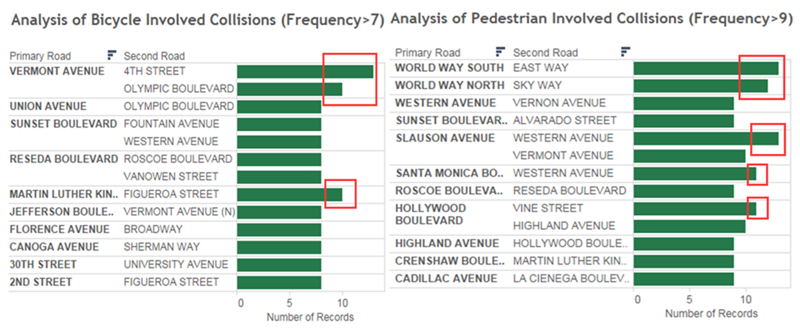
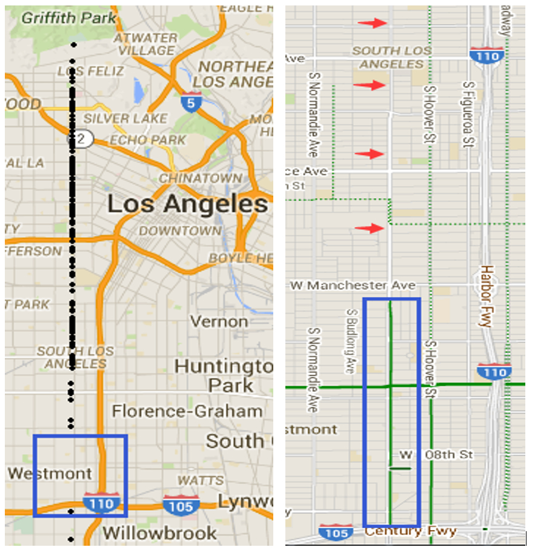
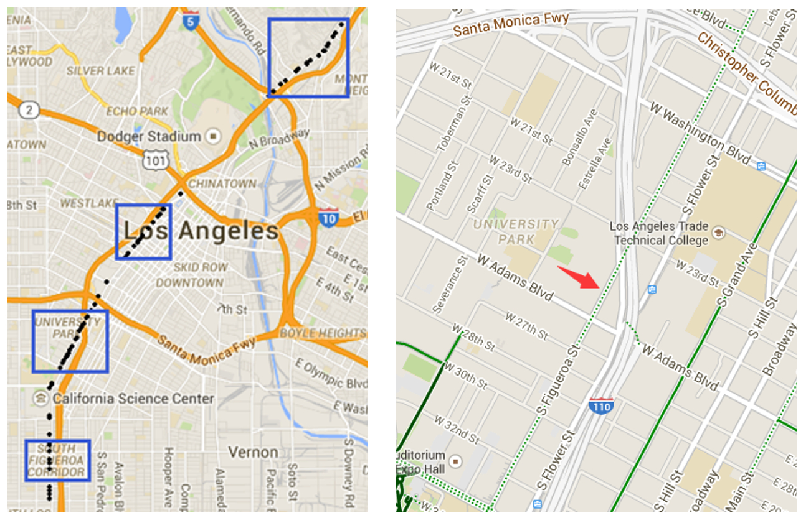

Pedestrian and Bicycle Analysis
Narrowing down to only pedestrian and bicycle involved collision, the pedestrian and bicycle focused collision location map has created below. In the red box, we have easily identify the area where pedestrian and bicycle involved collision happened most frequently. As it shared a very similar pattern with the overall auto collision map, the top three high risk area are Koreatown, LA downtown and south LA.
(Map data based on top 20 primary roads, top 20 second roads and roads involved in top 20 highest frequency intersections)
The intersection of Slauson Ave & Western Ave and World Way South & East Way are the two most risky intersection for Pedestrian. The intersection of Vermont Ave & 4th Street is the most frequent collision location for bicycle involved collision.
Bicycling Analysis
Below is the Bicycling Maps of City of Los Angeles. The black line identifies bicycle trails without auto traffic. The red line indicates Dirt/unpaved trails which are off-road dirt paths. The green line is dedicated lanes which are roads that are shared with cars and have a separate bike lane. The soft line demonstrate the roads that don’t have a bike lane but are recommended for cyclists.
Comparing to Santa Monica and the Southeast region of Los Angeles County, City of Los Angeles doesn’t have many dedicated lanes for cyclists. Especially in the Koreatown which has very high population density, there’s seldom trails, dedicated lanes or bicycle-friendly roads for cyclists.
Bicycle-Involved Collisions with Highest Frequency
Vermont Avenue

As shown in the left map, Vermont Avenue have many traffic collision related to bicycles from north to south. This is due to the lack of any types of bicycle lanes (bicycle-friendly lanes or dedicated lanes). There’s only one place (highlighted in blue squares in both two maps) that nearly has no collision records. This is region is also the only region that has separate bicycle lanes for cyclists on Vermont Avenue.
In order to improve safety of Vermont Avenue, we suggest LADOT to construct bicycle-friendly lanes between Santa Monica Fwy and W Martin Luther King Jr Blvd on Vermont Avenue and construct the separate bicycle lanes on the rest of Vermont Avenue, especially in Central LA.
Figueroa Street

As shown in the left map, traffic collisions happened in four regions that Figueroa Street crosses through. They are the Northeast Los Angeles region, Downtown Los Angeles region between w 3rd street and w 8th street, University Park and South Figueroa Corridor. Based on extra information from Google’s bicycling maps, we find that the most dangerous lanes of Figueroa near downtown area are the dedicated lanes which require cyclists to share the lane with cars.
To improve the safety of these area, we recommend LADOT to reconstruct and replace the bicycle-friendly road between W 33rd St and Venice Blvd to dedicated lane that has separate bicycle lane in Figueroa Street.